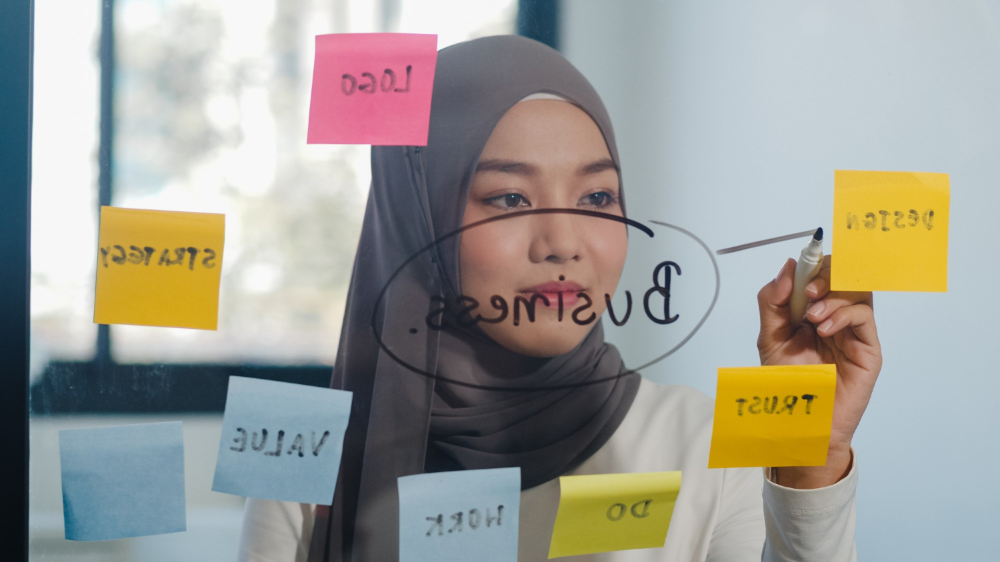

Buka halaman 1 untuk melihat kembali profil pribadi saya → | Buka halaman 2 apabila ingin tahu pengalaman kuliah →
Berikut ini daftar-daftar artikel tentang belajar dan bekerja:
1. 5 Cara Punya Work Life Balance: Belajar, Bekerja, Menikmati Hidup! Artikel ini memberikan tips untuk mencapai keseimbangan antara belajar, bekerja, dan menikmati hidup. Semua orang pasti punya cita-cita hidup secara seimbang antara pekerjaan dan kegiatan personalnya. Apakah kamu termasuk pribadi yang ingin punya work life balance? Cek dulu caranya di sini! Tekan ini
2. Kuliah Sambil Kerja: Tantangan dan Tips untuk Meraih Kesuksesan. Mengambil keputusan untuk kuliah sambil bekerja bukanlah hal mudah, namun semakin banyak mahasiswa yang melakukannya demi mengejar karier, menambah penghasilan, atau mengembangkan kemampuan pribadi. Jika kalian sedang mempertimbangkan untuk kuliah sambil bekerja, artikel ini akan membantu kalian untuk memahami manfaat, tantangan, serta memberikan beberapa tips agar berhasil menjalani keduanya. Klik disini

3. Pentingnya Kuliah Bagi Generasi Muda dan Pendidikan Bagi Semua Orang. Dengan kompetensi yang dimiliki dari lulusan perguruan tinggi, tentunya generasi muda akan menjadikan kuliah sebagai solusi untuk mendapatkan pengetahuan dan pengalaman yang luas. Serta membantu untuk meraih karir yang lebih baik. Dan dengan berkuliah, generasi muda akan mendapatkan banyak sekali manfaatnya. Klik ini